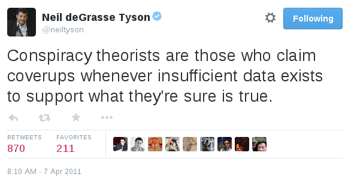
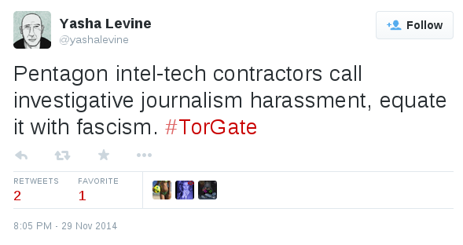
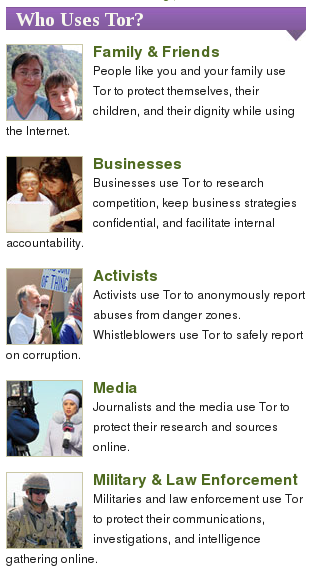
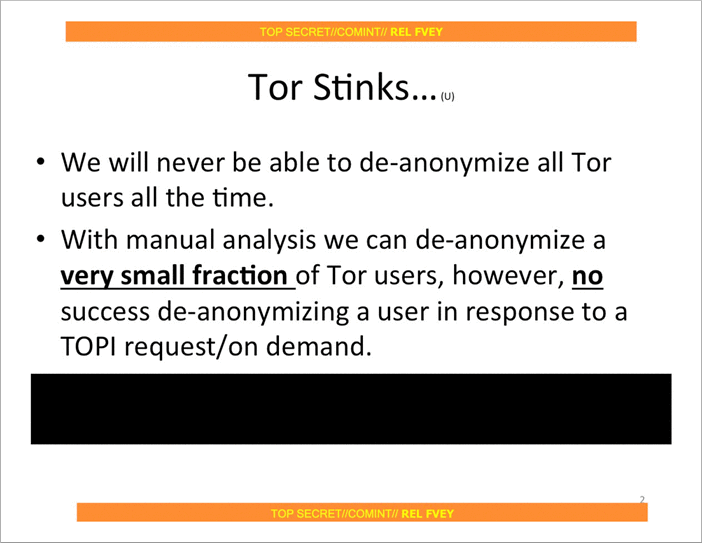

Fact-checking Pando’s smears against Tor
If you’ve been able to ignore Pando Daily’s 100% non-technical smear campaign against the Tor Project and its developers and supporters, you’re lucky, and you may wish to stop reading now. Otherwise, read on, and perhaps prepare to lose a few brain cells.
Yasha Levine’s “investigation” against Tor unveiled what’s already prominently displayed on Tor’s website: that it was designed by the Navy and that it receives a lot of federal funding, the bulk of which comes from the Department of Defense.
To be clear, talking about Tor’s government funding is a very important discussion to have. But Yasha didn’t discuss potential threats to Tor users’ anonymity that this funding might cause, nor what potential solutions would be. Instead, he implied that there’s some sort of conspiracy between Tor developers and the US government, and that the Tor network cannot be trusted, apparently oblivious that the decentralized and open nature of the Tor network and it’s codebase makes planting backdoors nearly impossible.
Trolling, harassment, and spreading conspiracy theories
Using only the fact that Tor receives federal funding, Pando has managed to rile up an anti-Tor community of Twitter trolls who insist that blatantly false things are true, like: using Tor makes it easier for the government to track you, that Tor is a honeytrap, that Tor developers are anti-privacy and support NSA spying, and that you can tell everything about a woman because she dyes her hair.
They also borrow tactics from GamerGate, including making puppet Twitter accounts to harrass women, and to continue harassing people when they get blocked. They even started using the GamerGate-copycat hashtag #TorGate, not realizing that it kinda reinforces the sexist troll image they’re trying to deny.

Government funding might be the first step in exposing a scandal, but not the only step
Throughout all of this, the Pando people (Yasha Levine, Paul Carr, and Mark Ames) and their #TorGate followers haven’t presented a shred of technical evidence against Tor’s safety. Their concerns are 100% speculation. They make the government funding point (an easy point to make since Tor prominently lists their sponsors and publishes financial reports for the sake of transparency), but then fail to connect any dots.
This is important because if they could present an actual specific concern, we can verify if their concern is real or not. The code is open, and anyone (including you) can easily run and study your own Tor nodes to confirm your suspicions.
Security issues with Tor get discovered all the time, and each time they get thoroughly researched (someone often ends up publishing a paper), the codebase gets patched, and Tor blogs about it to inform the public what the problem was and how it was fixed. See some recent examples here, here, here, here, here, and here.
The #TorGate people don’t know of any problems that exist with Tor or they would articulate what they are. They’re not interested in fixing problems to make Tor safer for everyone, they’re only interested in spreading conspiracies about Tor being run by the Feds as a honeytrap to spy on activists. These accusations are quite serious considering that activists around the world literally rely on Tor for their lives. Fortunately, they’re complete nonsense.
When I asked Yasha on Twitter how he would fix Tor to make it trustworthy and safe for everyone to use, the best he could come up with is to post prominent warnings on Tor’s website that says “USE AT OWN RISK” because it receives DoD grants. Keep in mind that potential answers could be: fork the project (it’s open source, after all) and build a separate onion routing network that doesn’t receive government funding; stop applying for government grants in favor of other sources of funding; etc.
Fact checking Pando’s Tor smear
In the faux-exposé that started all of this, “Almost everyone involved in developing Tor was (or is) funded by the US government”, Yasha writes:
Let’s start with the basics: Tor was developed, built and financed by the US military-surveillance complex. Tor’s original — and current — purpose is to cloak the online identity of government agents and informants while they are in the field: gathering intelligence, setting up sting operations, giving human intelligence assets a way to report back to their handlers — that kind of thing. This information is out there, but it’s not very well known, and it’s certainly not emphasized by those who promote it.
Cloaking the online identity of government agents and informants is likely the reason that the DoD helps fund Tor—they depend on it as much as everyone else—but this is not the purpose of Tor.
The purpose of Tor is to let anybody—normal internet users, businesses with trade secrets, activists, journalists and their sources, police, and yes, the military—have an anonymous connection to the net. If an onion routing network has any hope of hiding who is using it, it needs a diversity of users, all of whom receive equal benefits of anonymity.
This paper by Acquisti, Dingledine, and Syverson, On the Economics of Anonymity, goes into much greater detail, but here’s a quote from it that accurately describes the true purpose of Tor:
Single-hop web proxies like the Anonymizer protect end users from simple threats like profile-creating websites. On the other hand, users of such commercial proxies are forced to trust them to protect traffic information. Many users, particularly large organizations, are rightly hesitant to use an anonymity infrastructure they do not control. However, on an open network such as the Internet, running one’s own system won’t work: a system that carries traffic for only one organization will not hide the traffic entering and leaving that organization. Nodes must carry traffic from others to provide cover. The only viable solution is to distribute trust. That is, each party can choose to run a node in a shared infrastructure, if its incentives are large enough to support the associated costs. Users with more modest budgets or shorter-term interest in the system also benefit from this decentralized model, because they can be confident that a few colluding nodes are unlikely to uncover their anonymity.
In short, the diversity of users is what makes Tor work. If Tor were only built for US spies to use then anyone who sees a Tor user visit their website knows that the spies must be interested in them. Because Tor has millions of diverse users, if you see a Tor user visit your website all you know is that they’re using Tor. They could be a spy, but they could also be an activist, a hacker, or just someone who doesn’t want ad networks tracking them as they browse the web. You simply don’t know, and that’s what makes it work. Here’s an excellent overview of the diverse communities of people that benefit equally from Tor.
Yasha claims that: “This information is out there, but it’s not very well known, and it’s certainly not emphasized by those who promote it.” Here’s a screenshot from the front-page of Tor’s website. Notice the “Military & Law Enforcement” section.

Check out the prominent Tor overview page which begins:
Tor was originally designed, implemented, and deployed as a third-generation onion routing project of the U.S. Naval Research Laboratory. It was originally developed with the U.S. Navy in mind, for the primary purpose of protecting government communications. Today, it is used every day for a wide variety of purposes by normal people, the military, journalists, law enforcement officers, activists, and many others.
The Tor Project has always been completely honest about their origin and funding. In fact, the non-profit goes further to be transparent about everything it does, including funding, than any other organization that I know about. If you can find any organization that is as transparent as the Tor Project, please post about it in the comments. I’m curious if one exists.
Continuing on with Yasha’s hit piece, he goes on to cherry-pick the military and police uses of Tor, ignoring the rest of the users, and then sets the stage for conspiracy nonsense:
NSA? DoD? U.S. Navy? Police surveillance? What the hell is going on? How is it possible that a privacy tool was created by the same military and intelligence agencies that it’s supposed to guard us against? Is it a ruse? A sham? A honeytrap? Maybe I’m just being too paranoid…
Unfortunately, this is not a tinfoil hat conspiracy theory. It is cold hard fact.
Then Yasha goes on to explain the history of Tor, it’s military origins, how the project was open sourced and handed to EFF to manage. He quotes a 2004 EFF press release about Tor and accuses them of failing to mention that “this anonymity tool was developed primarily for military and intelligence use.” He criticizes them for focusing on its ability to protect free speech from oppressive regimes. EFF focused on this because Tor can help protect free speech from oppressive regimes. EFF is an non-profit law firm that’s devoted to upholding constitutional rights online. Just as the Navy supports Tor because they can use it to communicate securely, EFF supports Tor because it’s a vital tool for free speech and censorship circumvention. Yasha seems to be pretending that ordinary people’s privacy isn’t protected when they use Tor, which is a lie.
Tor is a tide that lifts all boats. When Tor was open sourced, it was no longer “developed primarily for military and intelligence use.” It was opened up under a free software license and given to all internet users, in all their diversity, who have owned it and relied on it ever since. It’s used by government agents, police investigating drug dealers, drug dealers trying not to get caught by police, investigative journalists, whistleblowers, and private citizens trying to browse the web privately.
In the end Tor does one thing: it keeps people’s IP addresses anonymous while they use the internet. This is why everyone with a vested interest in online anonymity, including the DoD (to keep their agents safe), and EFF (who’s currently suing the NSA for illegal spying), supports Tor.
Yasha goes on to outline Tor’s funding sources, much of them from either the DoD or the State Department.
I’d like to take a moment to point out that Tor’s funding model has some big problems. It’s dangerous to be too reliant on a single entity for funding—if their federal funding is cut, Tor is in trouble. And of course funders might try to influence the direction of the project and the research. In Tor’s case this is mitigated by the fact that 100% of the scientific research and source code that Tor releases is open, that the crypto math is peer-reviewed and backed up by the laws of physics, and by the fact that the Tor Project itself doesn’t run the network—the network is diverse and decentralized, run by volunteers all over the world (me included). It would be excellent if there were a way for Tor to get weaned off DoD funding and replace the bulk of it with some other source. And I’m sure they would be interested in doing this, if other sources of money made themselves available.
Personally I prefer that Tor gets the funding it needs to continue its groundbreaking anonymity research and to continue to improve its product and the stability of its network. I rely on it on a daily basis to do my work in journalism and source protection safely and securely. It would be great to have a real conversation about this without Pando’s baseless conspiracy theories.
In the section “How safe is Tor, really?”, Yasha points out that traffic correlation attacks exist, and that Tor isn’t safe against global adversaries (which are both likely-unsolvable low-latency onion routing problems that have been outlined in Tor’s design document since at least 2004). Tor has done more research on these issues than anyone else, and the latest version of Tor is the state-of-the-art technology in this area, but it will probably never be perfect, because it’s probably not possible for it to be perfect.
In his hit piece, Yasha lists some examples of Tor failing to protect people:
- The Harvard kid who was the only Tor user on Harvard’s network at the time that he sent his bomb threat.
- The Freedom Hosting and Silk Road hacks (problems with the web apps that were hosted as Tor hidden services, not with Tor itself).
- Exit node sniffing (an issue with people using plaintext protocols on the internet; people are just as vulnerable when using airport wifi, though perhaps they’re less likely to have an attacker on their network than to be using a malicious exit node).
These sort of things happen a lot, and they will continue to happen a lot. Like plane crashes, we can study and learn from them each time to make them less likely to happen in the future. Tor continues to improve, and to make these attacks harder, more expensive, or impossible to pull off.
For example, when FBI hacked Freedom Hosting servers and started attacking visitors’ Tor Browsers with javascript exploits, they only attacked old versions of Tor Browser (based on an old Firefox exploit) because new versions weren’t vulnerable. The major problem there was that people weren’t upgrading their software. Now Tor Browser doesn’t just warn you when your browser is out-of-date, it will automatically upgrade it for you too. Next time a Freedom Hosting-style attack happens, no one will be running an outdated Tor Browser.
This doesn’t mean that it’s dangerous to use Tor, especially if you pay attention to the list of things to pay attention to that all Tor users see when they download Tor Browser, and again when they open Tor Browser. It certainly doesn’t mean that Tor is a honeytrap.
Yasha references Snowden documents (2.5 years old at this point) about NSA’s attempts to attack Tor. Of course, he didn’t mention the slide that confirms that (at least 2.5 years ago) NSA wasn’t a global adversary, and therefore couldn’t easily deanonymize Tor users by connecting the routing dots. We’ve learned a lot about NSA’s almost omnipotent capabilities from the Snowden leaks, and this slide gave me great hope that we still have a fighting chance at privacy.

He states that: “Tor co-founder Roger Dingledine revealed that the Tor Network is configured to prioritize speed and route traffic through through the fastest servers/nodes available,” as if this were a secret, and Roger weren’t discussing it in order to figure out how to solve the problem of the trade-off between circuit diversity and speed.
It’s important to know that simply running high bandwidth nodes doesn’t mean you’re malicious. Unless you’re an exit node, 100% of the traffic that travels through your node is encrypted. If you are an exit node, then you can only easily spy on plaintext traffic, e.g. you can see HTTP traffic but you can’t see HTTPS traffic—the same as a normal network attacker on open wifi. And unless you control both the entry and exit nodes in a single circuit (much of the arms race right now is focused on making this impossible), you can’t deanonymize anyone. Tor is built this way by design.
Finally, Yasha ends his the article with Edward Snowden and the fact that he ran some high-bandwidth Tor nodes, as if this was a bad or sketchy thing for him to do. Running Tor nodes is an excellent thing to do for anyone who cares as much about internet freedom and privacy as Snowden does to contribute to the movement.
Pando is not a credible news source
Investigative journalism is incredibly important, even when the target of the investigation is an organization like the Tor Project. Following the money is a great way to begin discovering corruption. Pando’s reporting about Tor is not investigative journalism. They set out to attack Tor, found that it gets lots of government funding, and wrote a story about that, pretending that that’s the same thing as Tor being malicious.
If there were some sort of document, like an email or a contract, that shows that a Tor developer was doing something malicious on behalf of the government, that would be a huge piece of investigative journalism. If there were evidence of an intentional design flaw in the Tor network, similar to NSA’s sabotage of encryption standards through their BULLRUN) program, that would be a huge deal. Pando didn’t find anything that wasn’t published on torproject.org.
Who knows Pando’s true motives—most likely, they’re doing it for the traffic by stirring up controversy, like a tabloid. But regardless of the intentions, they’re certainly attacking one of the most important privacy tools in our collective toolbag. Nothing good will come from people who truly need Tor, such as whistleblowers and dissidents, believing Pando’s nonsense.
Luckily, I don’t think that’s likely to happen.


Legacy comments, imported from previous version of this blog:
Anonymisierungs-Dienst Tor: Das Tor Project bleibt überwiegend regierungs-finanziert – Avada Classic
April 25, 2017 04:45 AM
[…] Journalist Yasha Levine das Dilemma in einem langen Artikel lautstark problematisiert und damit Widerspruch und sogar heftige Attacken gegen ihn […]
CaptBlack
December 11, 2014 11:05 AM
OMG...DoD funding!!! EVERYONE stop using the internet...
eltimbalino
December 12, 2014 12:25 AM
Thanks Pando. I hope your antics have introduced more people to the TOR project.
Bob
December 11, 2014 01:25 PM
Yasha believes that only the government can protect privacy with some new law. Everyone who says anything about encryption and privacy is a evil Techno-Libertarian who does not believe or hates democracy.
The Pando guys hates Greenwald and Omidyar and everything they like, so Snowden and Tor is on the hate list.
Rowan
February 5, 2015 03:30 AM
It could be more accurate to say that its futile to try and take on the US government in a sort of encryption arms race..
If you can't realize that, and engage in any sort of real political process to create a government that doesn't / cant spy on the entire worlds internet traffic, then things are only going to get worse..
Mark Fox
December 11, 2014 07:10 PM
This is a well written rebuttal to Yasha's reporting except for all of the name calling. I'm just a curious bystander who and would like to see Tor get adopted more widely, but this whole kerfuffle is starting to worry me.
The facts about the DoD funding were not clear until Pando made them clear. I had been following Tor for a while before I read the Pando piece. Your own thoughts about weaning Tor away from the DoD are really great to hear. The explanation of exit-nodes, etc. is also really great. These are the kinds of conversations Tor-users will benefit from and this seems entirely due to an outsider critically looking at the project.
It would be really helpful to move past the binary rhetoric. I feel like a big part of this whole stink comes from the huge gap in understanding over crypto and open source software-dev in general. The DoD funding bothers me less now that it's out in the open and we're talking about it. Quinn did a really good job of pointing out that Tor needs to do a better job explaining itself, if it ever wants the wide adoption it's aiming for.
I read Pando regularly (I've been a fan of the NSFW News Corp crew for a couple of years) and I am also a fan of Tor and the EFF. They are not mutually exclusive worlds (although I see the apparent tension).
Micah, you're clearly intelligent and informed and are in a position to speak to the Tor side — help the Tor community push past the reactionary stance and use the reporting to improve it's stance. Trying to make this conversation be about harassment/trolling is really diluting the counterpoint of what you're saying.
Being a Tor developer/advocate is not an easy job. Being an independent journalist is not easy job. For the most part everyone involved is doing good work and this intersection via criticism should bring about dialog, not shouting matches.
Yeah, the jjabroni10-dude was obnoxious and sexist and his presence has been really shitty for the whole discussion. GG consists of thousands of coordinated accounts but according to Shepared's research jabroni had like 7–10? The whole doxxing him off the internet ordeal is a deliciously-ironic and highly-depressing twist. It was a politically stupid, slightly hypocritical move for anonymity advocates to use technological prowess to squash an isolated gadfly.
If there needs to be a public hero in this whole controversy it's probably going to be Pando if things continue the way they are. Tor gains nothing by crying foul against well researched, easy to understand reporting.
Micah Lee
December 12, 2014 09:01 PM
I'm entirely confused by this. Are saying that that Pando's article that deliberately spreading lies about an important software project that people rely on to stay is "well researched"?
Lies such as:
The Pando people remind me of anti-vaccine conspiracy theorists. Despite what the vast body of research into Tor shows, they insist that it's a honeytrap and not safe to use. This is irresponsible, and it will never make them a "hero".
Mark Fox
December 14, 2014 07:07 PM
Thanks for responding — re. your two points.
Point 1, the full quote is:
"NSA? DoD? U.S. Navy? Police surveillance? What the hell is going on? How is it possible that a privacy tool was created by the same military and intelligence agencies that it’s supposed to guard us against? Is it a ruse? A sham? A honeytrap? Maybe I’m just being too paranoid…"
In this sentence he's not stating facts he's posing suppositions. Reasonable suppositions. It's clear Yasha does not trust the Tor project but he clearly ends that with "Maybe I'm just being too paranoid…" — it's transparently delineated as his feelings (not a list of facts). You can say his conclusion is more true, or more false... but it's not a lie.
Right, it's a tough statement and potentially it's one of the most inflammatory parts of the piece but I don't think it's a smear — it's a plausible conclusion given the research (again, he's not a liar, he's just working from a misconception). The onus of proving it wrong is important and worthwhile. In this instance your counterpoint (this blog post) is hugely valuable.
I do think that Tor (which I agree is a valuable tool) deserves a hard look, and Yasha specializes in taking hard looks. Obviously a project developed in the open and made freely available will have a multitude of uses — but the people who give it the most money have a particular set of uses in mind. Maybe the government funds going into Tor readily acknowledge the value of these other use cases. It's worth talking about even if it's fuzzy for an anonymity network to prove how it's used.
It's an interesting issue of OpenSource software is that it needs donors and patrons to stay viable but there is always a tension between project sponsors and the primary developers. Just look at Joyent and the node/io.js forking. I'm not questioning the motives of any of the Tor devs, they have a tough job and I respect their work, but it's reasonable to wonder how government funding influences the project even if it's insignificant (which is an open question we have to have answered).
Micah Lee
December 14, 2014 11:28 PM
The full full quote is:
So when Yasha says that this is not a tinfoil hat conspiracy theory and that it is "cold hard fact", what is he referring to? The only fact that Yasha references in his whole post is where Tor gets its funding. However what I quoted above certainly makes it seem like Tor being a honeytrap is "cold hard fact".
And regarding the purpose of Tor quote, it's not backed up by anything. The purpose of Tor is to solve a shared problem that many different communities have. Like I just posted in a different comment: The actual purpose of Tor is to create an open and secure onion routing network, so that anyone can make anonymous TCP connections on the internet without having to trust the individual nodes in the network.
Focusing on one of the countless ways that Tor can be used and saying that that's "the purpose of Tor" is deliberately misleading.
Lyle
April 27, 2015 06:47 AM
No dog in this fight except the privacy we all deserve. If you believe for one second that the same government that gave all of it's allies the well cracked Enigma machine as unbreakable encryption has handed an International anonymous communications tool to the world for free, you are ignorant of history and how our government operates. Don't get me wrong, they make mistakes, but they don't fund those mistakes for 10 years.
Now, I don't have any proof, but you can't prove that the US government doesn't own the entire onion from end to end. However, my opinion (that TOR is not secure) has the advantage of remaining within historical context of previous operations of our government, while your opinion (TOR is secure) is simply wishful thinking based on misplaced trust. No one needs vague conspiracy theories when the track record is so clear. If TOR was not initially founded as a rehash of the Enigma machine, it certainly didn't remain well funded for a decade without being bent in that direction.
This isn't about me, or you, just historical records versus guessing and history has something to teach us regarding TOR, while guessing has no value at all.
James
December 14, 2014 08:02 PM
How can “Tor’s current purpose is to cloak the online identity of government agents and informants while they are in the field” be a lie when it's on the screenshot of the "Who uses Tor?" final paragraph shown in this post above?
Micah Lee
December 14, 2014 11:20 PM
Oh well if we're using that logic then the purpose of Tor is so that people like you and your family use Tor to protect themselves, their children, and their dignity while using the Internet. Why didn't Pando mention that?
The "Who uses Tor?" section is a list of different types of people who use Tor, not the purpose of Tor.
The actual purpose of Tor is to create an open and secure onion routing network, so that anyone can make anonymous TCP connections on the internet without having to trust the individual nodes in the network.
corrector
December 20, 2014 07:28 PM
"Tor’s current purpose" implies there is ONE purpose.
"it’s on the screenshot" among others, so it cannot be THE purpose.
You don't even need to understand what's going on to see that, it's just grammar.
corrector
December 20, 2014 05:13 PM
"anti-vaccine conspiracy theorists" have crazy theories but they also have VERY good points about vaccines being untested, sometimes inefficient, sometimes dangerous, very often useless medical treatments (esp. the ineffective, or inefficient, "flu" vaccine).
Pro-vaccine discourse violates not only scientific norms, statistics norms, but also medical norms "first do no harm".
Pro-vaxxers are an hysterical crowd who act in the most disgusting way, with the help of Hollywood.
You don't want to be part of them.
Alias Surname
December 24, 2014 12:33 PM
Absolutely. Incredibly well said.
Alias Surname
December 24, 2014 12:37 PM
Mark Fox is one bright dude.
Tug Benson
December 12, 2014 05:46 AM
I don't know why questions and concerns about the funding of a project are automatically handwaved considering how malevolent the US DoD and espionage cabals are. "Who cares if animals were vivisected, it's good medicine right? Who cares if chickens suffered in squalor, you like eggs don't you? Who cares if US intelligence routinely overthrows democratic governments and kills and tortures people, Tor works doesn't it?" Tor's government sponsors and the people they pay contract dollars to both have a PR responsibility to promote the use of Tor as an instrument of freedom for journalists and activists in oppressive countries. Imagine how ironic that is: use this tool, funded by the same outfit that funded the death squads who murdered and tortured their way into power, to protect yourselves from them. Would people be jumping at that chance? Would they if Tor was started by the Stasi or Russia, even if it was technically sound? I highly doubt it. (But the website discloses these facts, so it must be true that everyone using Tor is aware of it, sure. Let's get extremely mad at the article which is 90% comprised of this totally mundane information.) So then, all you'd have left is spooks and criminals and society may decide it's not such a positive thing after all, which may compromise either the funds or tolerance of its anarchic element. And it's possible that Tor developers have little on their minds but getting paid to work on math problems without paying attention to the ethical quandaries of their benefactors. And also possible that the actions of Tor's benefactors weigh less on the minds of its supporters than unkind 140 character Tweets. Yes, even cancer charities return donations to people who merely say hateful things in public. A lot of NGOs working to make the world better would never take DoD funding, not that they couldn't put the money to good use, because it raises serious questions about their integrity and their credibility and reputation. That suspicion is all that's necessary! Not here, for some reason. But if next year Human Rights Watch decided to take 90% of their funding from the CIA, and even if they both asserted it had no effect on their work and no evidence could be found that it did, do you really think the world would be fine with it? People have every reason to doubt Tor or refuse to use it from an ethical position, I don't see why it should be held to a different standard from other non-profits and such that promote themselves as being for the public good. I'd like to see reporting into how much of a connection there is between its biggest proponents and beneficiaries and various American prismatic democracy-spreaders.
Micah Lee
December 12, 2014 07:29 PM
Concerns about funding are 100% valid. I pointed that out in this blog post.
However spreading unfounded lies about the safety of a tool that people rely on to protect themselves is irresponsible and simply bad for the world.
If you're going to make damning accusations like this, you need to back it up with facts.
Rowan
February 5, 2015 03:19 AM
These are some of the valid points I think the article raises:
'But the German exposé showed Tor providing the opposite of anonymity: it singled out users for total NSA surveillance, potentially sucking up and recording everything they did online.'
'In 2013, the Washington Post revealed that the NSA had figured out various ways of unmasking and penetrating the anonymity of the Tor Network.'
'In a 2011 discussion on Tor’s official listserv, Tor developer Mike Perry admitted that Tor might not be very effective against powerful, organized “adversaries” (aka governments) that are capable monitoring huge swaths of the Internet.'
'some aspects about Tor are definitely welcomed by the NSA, in part because it helps concentrate potential “targets” in one convenient location.'
Basically - using Tor can highlight you for more intensive NSA surveillance, and its reasonably likely you can be de-anonymized by them.
For people who knew the story of Tor well a lot of Yasha's piece might have seemed conspiratorial.. But there are a lot of people out there who have the perception of Tor as a tool for anonymity on the net made by anti-surveillance groups..
And there is some irony that key members of the anti surveillance crew are on the payroll with the same spooks they are fighting.
Writing about Tor's funding and history doesn't equate to calling Tor a conspiracy.
Celeste Guarini
January 5, 2017 02:02 AM
Levine should be distrusted simply because his selfie on that site has a pyramid in the background...
Recently, several new nodes appeared in Tor: niftygerbil, niftymouse, niftysquirrel, etc., coincidentally with names straight out of the NSA linguists playbook, which I imagine could produce some interesting research.
But so many Tor cheerleaders have been so quick to pronounce it safe that they themselves seem to betray basic creative questioning, or outside the box scientific skepticism.
From my experience, the MIM attacks against Tor have been common place in the U.S. since at least 2008, and LEO's then were primarily engaged in figuring out how it works, and deliberately NOT bringing cases, because of the fact that this would reveal the larger apparatus that Snowden gave us.
Between 2008-2013, they were "targeting individuals," as study subjects, in a grand nation-wide double bind study/experiments-like Bateson's porpoises, but with computers. So, on one hand, you have/had the DEA setting up drug deals from start to finish, and the FBI creating mentally ill 'terrorists," and "rings of pedophiles," and then following them around to see how they reacted to various provocations, while agents studied their communications and associations via Tor, and so on. Then they targeted these guys with exploits of all kinds-all 'off the records.'
I personally have observed Tor crash especially when using nodes that are routed directly through Booz Allen; and you yourself have covered how whole institutions have worked for the FBI et ass to study routing and endpoint map individual Tor users- but one less-than-disclosed fact is that Tor can be exploited by simply deploying a Teardrop attack against someone who has been previously pin-pointed and targeted, which causes browser dumps, and fills intel agency baskets with goodies. This of course, after targets are identified and tracked over time and then parallel constructed (Ross Ulbricht was likely one such target-set 'em up, and knock 'em down...suuuure, some IRS investigator figured it all out....).
What is happening- and one would have to break the law, bend it or cause the appearance of breaking the law to demonstrate it (in a sandboxed machine of course), is that that the big FiveEyes agencies are essentially creating cases, and then kicking them down to LEO's across the world after they themselves have exploited targets for HUMINT. And Israel is itself highly engaged in 'anonymous tipsterism,' after they determine if someone if a zionist or not; then turning them over to our agencies. The USAF has some interesting offshore capabilities of exploitation as well.
Then, after a target has worn out their HUMINT capability, they agencies kick the case down to local LEO's who act like the case came from the ISP, the post office (sure-old man Berman is rolling in his grave) or an 'anonymous tipster, or ICAC or NCMEC, or any of the 'human trafficking' agencies, and parallel construct a case or two, and get more federal funding cuz, pedophiles, terrorists, and journalism.
You are a brilliant tech- I bet you can replicate everything I say above and apply sound science to it. But it helps to remain skeptical, and find balance. Somewhere between conspiracy theory and empirical data lies conspiracy facts that can and should be put together so that qualified people can learn to ask the right questions, and those of us who discover these things should b lauded, not ostracized as crackpots.
We know Oswald was a patsy; that Tesla was ruined; that COINTELPRO was real and is today; and even Hillary was right about vast conspiracies- even as she touted the "Russian hacker" story. And, William Binney and Kurt Wiebe are now actively researching the phenomenon of "targeted individuals" who are victims of "organized stalking."
What is much harder to discuss or disclose, is why even the best of journalists don't investigate FIRST, before we the people do the homework. Imagine how Snowden felt when he broke the law-but did the research anyways. Not all of us have the cash to get out of America while we can....
SomeCharlatan
December 11, 2014 01:40 PM
These Pando Tor articles are exactly the same as their attacks on FLM, and Pierre. Just a bunch of speculation, and "well, it sure seems like..", without anything to back up any of what they are saying. The best part of that saga was Paul Carr's "OMG WAIT AND SEE-- WE DON'T HAVE A STORY, BUT NY MAG DOES!". What a joke, especially considering the NYMag story couldn't have been much more benign.
It's crazy that a "news" site could behave this way-- Especially considering their reaction to the RS story.
Isn't it obvious? Pando realizes that the Infosec scene is large, and growing. FLM and Tor are very popular in that scene.. Pando isn't. Their goal seems to be to get as much attention as they can, in the hopes that some folks will start looking at their site.
bigly
February 16, 2017 11:11 AM
HACKED?! Yo Micah Lee were you hacked?
Chris
March 17, 2015 11:37 AM
As long as TOR is funded by the US government, the suspicion is bound to remain in the minds of many that it is not to be trusted. I use TOR and agree with many of the points in Micah's post but I am concerned about the funding question.
The only way out of this is to fork the project so that it is not funded by any government.
Use crowd funding?